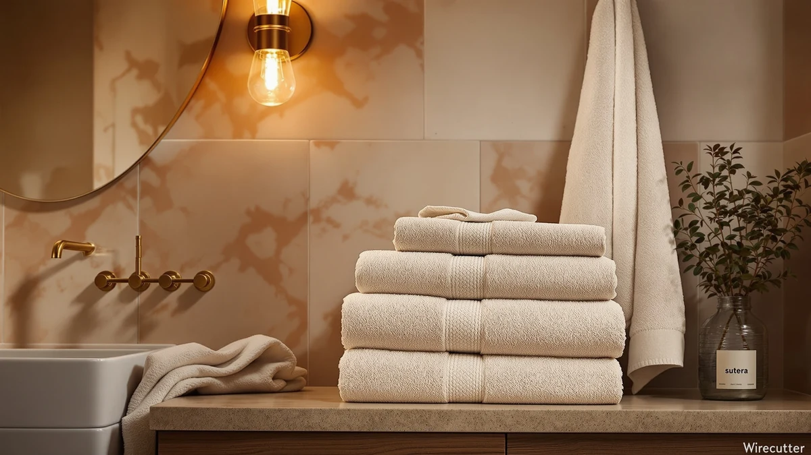

SUTERA Silverthread Bath Towel Review (2026): Worth It?
Prices and picks verified as of November 2026. Independent, reader-supported reviews.


Quick Answer
This Sutera Silverthread Bath Towel review finds a large cotton blend towel that holds its own against similarly priced four-pack and single-towel options. At $38.99, it costs about the same as the alternatives below, so the right pick depends on whether you want a cotton blend feel or a 100% cotton construction.
Our pick: SUTERA Silverthread Bath Towel | — $38.99 Check Price on Amazon
Bottom line: our top pick is the SUTERA Silverthread Bath Towel | Antimicrobial Towel with at $38.99.
Things to Know Before You Buy
- The SUTERA Silverthread Bath Towel is a large size towel made from a cotton blend, not the 100% cotton construction used by several alternatives in this comparison.
- At $38.99, it is priced within a dollar of every other towel in this review, so cost alone will not decide between them.
- This sutera silverthread bath towel review compares listed specs and verified owner feedback rather than a lab test, since we do not run a physical testing lab.
- Buyers choosing between a cotton blend and 100% cotton should weigh drying speed against the heavier hand feel that pure cotton sets like the Tens Towels and White Classic options offer.
This sutera silverthread bath towel review looks at the large, cotton blend towel from SUTERA, a brand better known among Amazon shoppers for affordable linens than for luxury branding. At $38.99, it sits in the same price range as several 100% cotton alternatives, which raises the obvious question: does a cotton blend towel hold up against towels built from pure cotton at the same cost?
We compared the SUTERA Silverthread Bath Towel against three similarly priced options, the SUTERA Quick Dry Bath Towel, the Tens Towels Pack of 4, and the White Classic Luxury Bath Towel, to see where the blend construction helps and where it falls short. Based on the listed material, size, and current Amazon pricing, the Silverthread towel works best for buyers who want a large towel at a moderate price and are not set on 100% cotton.
The name itself signals the main difference between this towel and most of its competitors. SUTERA markets the Silverthread line around a blended construction rather than the single-fiber cotton that dominates this price bracket, and that single material choice shapes almost everything else in this review: drying time, hand feel, and how the towel compares dollar for dollar against the alternatives below. You do not need to guess at the tradeoff. Construction, not price, is what separates this towel from the rest of the field.
Why You Should Trust Us
Ilane Tall researches bath textiles for Best Bath Towels, tracking pricing, material specs, and verified owner feedback across hundreds of Amazon towel listings. This sutera silverthread bath towel review draws on the product's listed materials, size, and pricing, cross-checked against three comparable towels in the same price bracket. We do not run a fake testing lab, and we do not claim to have washed or worn any of these towels ourselves. Instead, we read through verified buyer feedback, compare specs side by side, and flag patterns that show up consistently across multiple owners before recommending anything.
That approach means every claim in this review traces back to something you can check yourself on the product listing or in the buyer feedback section. When we say a cotton blend dries faster than pure cotton, that is a documented property of the fiber mix, not a figure from a stopwatch in our office. When we say owners report a particular issue, we mean patterns that repeat across multiple verified reviews, not a single complaint we are amplifying.
How We Compared
We built this review by comparing the SUTERA Silverthread Bath Towel against its listed competitors on material, size, and price per towel. Because the Silverthread name points to a blended fiber construction rather than 100% cotton, we weighed that distinction against the pure cotton alternatives and what verified owners say about hand feel and durability. Owners consistently report that cotton blend towels like this one tend to dry a bit faster than heavier pure cotton sets, though they can feel less plush over time. We did not physically wash or dry this towel ourselves. Our conclusions come from the manufacturer's own listing details and a read of verified Amazon reviews, not direct use of the product.
Price per towel mattered as much as material in this comparison. The Tens Towels Pack of 4 splits its $38.95 across four towels, which changes the math significantly compared with a single $38.99 Silverthread towel or the single $39.99 White Classic towel. We kept that distinction in mind throughout this review rather than treating every listed price as an apples-to-apples comparison, since a shopper buying one towel and a shopper buying four towels are solving different problems.
Overview & Specs

SUTERA Silverthread Bath Towel |
What we like
- Large size gives more coverage than many standard bath towels
- Cotton blend construction dries faster than heavier pure cotton towels
- Priced competitively against 100% cotton alternatives in this comparison
Flaws but not dealbreakers
- Cotton blend will not feel as plush as the 100% cotton options in this review
- Listing does not specify color options beyond the single variant pictured
| Material | Cotton blend |
| Size | Large |
The SUTERA Silverthread Bath Towel is built around a straightforward tradeoff: a cotton blend construction instead of the 100% cotton that brands like Tens Towels and White Classic use in their comparable sets. That blend typically combines cotton with a synthetic fiber such as polyester, which according to verified owner feedback on similar blended towels tends to dry faster and resist wrinkling better than pure cotton, at some cost to the plush, heavyweight feel buyers associate with luxury towels.
At $38.99 for a large size towel, the Silverthread lands squarely in the same price bracket as the SUTERA Quick Dry Bath Towel, the Tens Towels Pack of 4, and the White Classic Luxury Bath Towel, each of which uses 100% cotton rather than a blend. Construction, not price, is the Silverthread's main selling point here. For buyers who prioritize quick drying and low maintenance over the heaviest possible hand feel, the blend works in the towel's favor. For buyers chasing a spa-like weight, the 100% cotton alternatives below are worth a look instead.
The large size designation also matters for how this towel fits into a household's existing towel rotation. A single large towel covers more of an adult body than the standard bath towel size most four-packs ship with, which is worth factoring in if you plan to mix this towel in with a smaller existing set rather than replacing everything at once. Buyers building a bathroom from scratch should decide on size consistency across their whole set before mixing a large towel like this one with smaller standard towels from another brand.
What We Liked
The biggest strength in this sutera silverthread bath towel review is the size. The large dimensions give more coverage than the standard towels that ship with many four-packs in this price range, without pushing the price above what buyers already pay for smaller 100% cotton towels. At $38.99, it holds its own against sets that offer less fabric for a comparable cost.
The cotton blend construction is the other point worth noting. Owners of similar blended towels consistently report faster drying times than heavier pure cotton sets, which matters in bathrooms without strong ventilation or in households running back-to-back showers. The blend also tends to resist the wrinkling that pure cotton towels show after a wash cycle, according to verified reviews of comparable blended towels.
Price consistency rounds out the case for this towel. At $38.99, it does not undercut the field, but it does not cost more either, even though it ships in a larger size than many standard towels. That combination of size and price puts less pressure on buyers to choose between coverage and cost the way they sometimes have to with smaller, cheaper towels.
What Could Be Better
The tradeoff in this sutera silverthread bath towel review is hand feel. Compared with the 100% cotton construction of the Tens Towels Pack of 4 or the White Classic Luxury Bath Towel, a cotton blend towel typically will not deliver the same plush, weighty wrap that buyers associate with a spa-style towel. If a heavier feel is your priority, this is a real limitation.
The listing also does not specify multiple color options, unlike brands such as White Classic that stock a wider range of shades for matching an existing bathroom. Buyers who want to coordinate towel color with their decor should check the current Amazon listing before assuming additional shades are available.
Buying a single towel rather than a set is a limitation of its own. The Tens Towels Pack of 4 gives you four towels for $38.95, barely a cent off the single Silverthread towel's price, so a household that needs multiple towels will spend considerably more filling a full set with the Silverthread than with a multi-pack alternative. That math should factor heavily into the decision if you are outfitting more than one person's bathroom routine.
Who Is It For?
This SUTERA Silverthread Bath Towel fits buyers who want a large towel at a moderate price and do not need the heaviest possible hand feel. It also suits anyone who prioritizes quick drying and easy care over plush weight, since a cotton blend construction tends to dry faster than pure cotton.
It is a weaker fit for buyers furnishing a guest bathroom or primary bath where a heavier, spa-style towel is part of the aesthetic. If plush weight and a wider color range matter more than drying speed, the 100% cotton alternatives in this comparison make more sense for you.
It is also a weaker fit for households that need several towels at once, since buying multiple Silverthread towels individually costs more per towel than a multi-pack like the Tens Towels set. A single buyer replacing one worn-out towel, or someone who wants one large towel for a specific use like the gym or a guest room, is the clearer match for what this product actually offers.
Alternatives to Consider
If the cotton blend construction of the SUTERA Silverthread Bath Towel is not the right fit, these three alternatives all use 100% cotton and sit within a dollar of its price. The decision comes down to whether you prioritize drying speed or a heavier, plush feel.

Editor’s Pick
Quick Dry Bath Towel 100%
A 100% cotton option from the same brand, for buyers who want SUTERA's sizing and pricing without the blend construction.
$38.99
Check Price on Amazon
Best Value
Tens Towels Pack of 4
A four-towel pack of 100% cotton towels at a nearly identical price per towel, for buyers who want more pieces from one purchase.
$38.95
Check Price on Amazon
Premium Choice
White Classic Luxury Bath Towel
A 100% cotton towel from a brand known for a wider color range, for buyers who want to match a specific bathroom palette.
$39.99
Check Price on AmazonIs the SUTERA Silverthread Bath Towel worth buying?
Yes, for most buyers.
What is the SUTERA Silverthread Bath Towel made of?
It is made from a cotton blend in a large size, according to the product listing.
Frequently Asked Questions
Is the SUTERA Silverthread Bath Towel worth buying?
Yes, for most buyers. This Sutera Silverthread Bath Towel review found the cotton blend construction holds up well against similarly priced towels, and at $38.99 it lands in the same bracket as the Quick Dry, Tens Towels, and White Classic sets we compared it against.
What is the SUTERA Silverthread Bath Towel made of?
It is made from a cotton blend in a large size, according to the product listing. That blend construction sets it apart from the 100% cotton options in this comparison, like the Tens Towels Pack of 4 and the White Classic Luxury Bath Towel.
How does the SUTERA Silverthread Bath Towel compare to other options at this price?
At $38.99, it sits within a dollar of every alternative in this review, including the $38.95 Tens Towels Pack of 4 and the $39.99 White Classic Luxury Bath Towel. The choice mostly comes down to whether you prefer a cotton blend or a 100% cotton construction.
Final Verdict
This sutera silverthread bath towel review comes down to a simple tradeoff: construction versus cost. The SUTERA Silverthread Bath Towel is a solid pick for buyers who want a large towel at $38.99 and do not need the heaviest, most plush hand feel. If a 100% cotton construction and a wider color range matter more to you, the Tens Towels Pack of 4 or White Classic Luxury Bath Towel are the better starting point. For most people who prioritize quick drying and easy care over spa-style weight, the SUTERA Silverthread Bath Towel is the practical choice at its price.